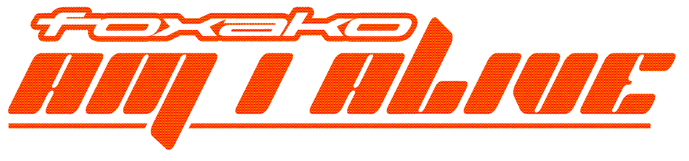
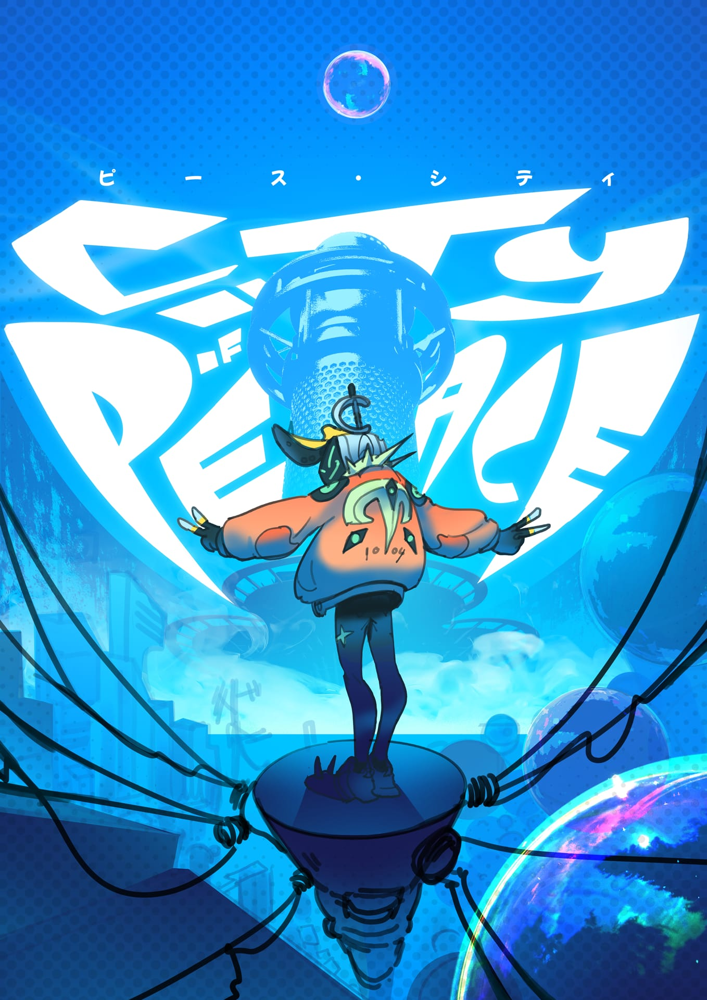
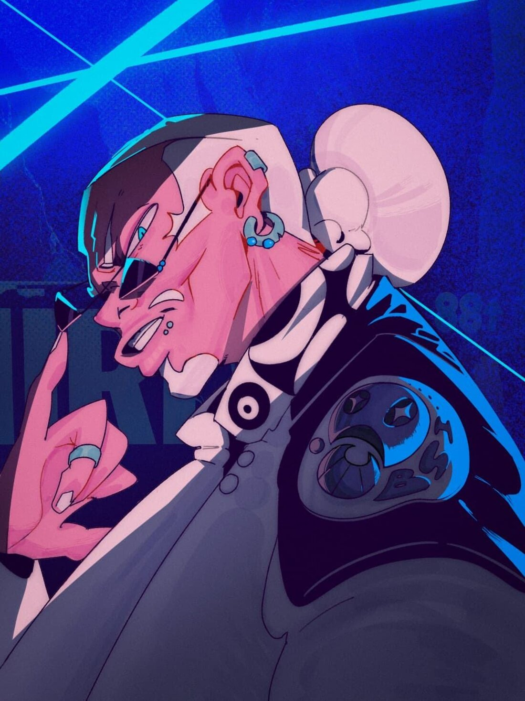
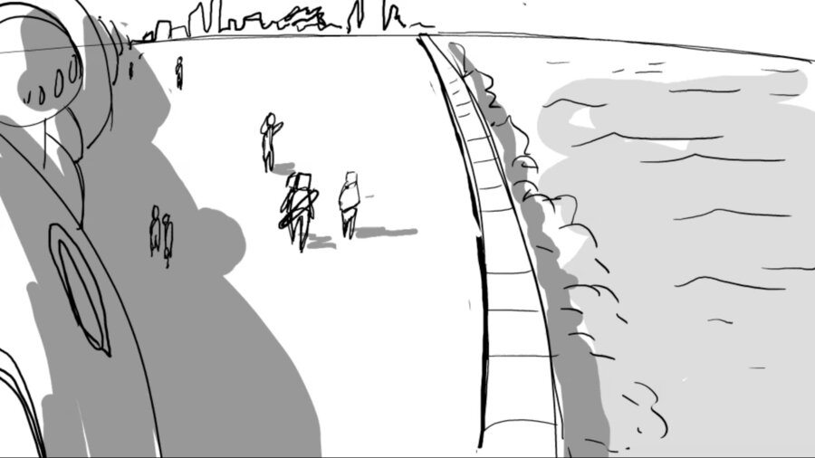
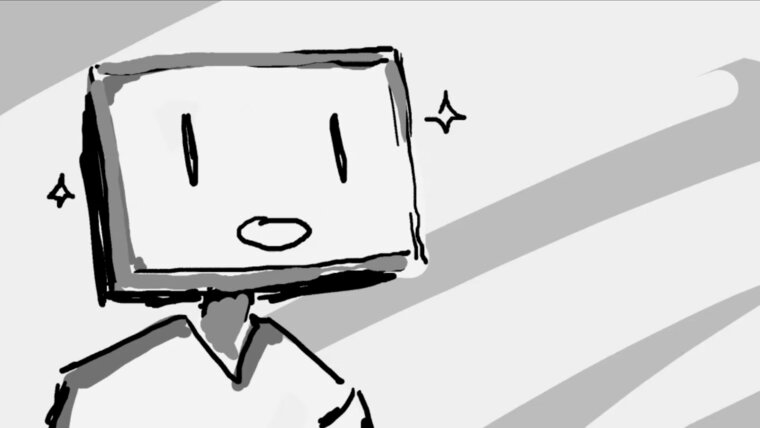
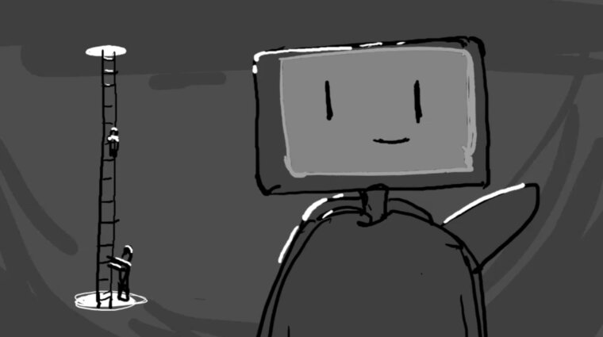
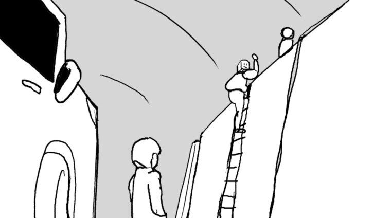
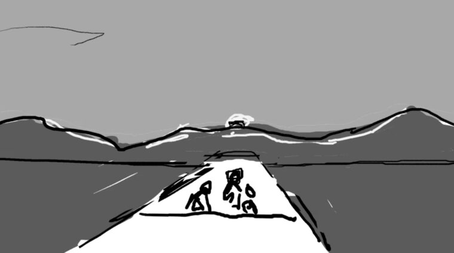

French electronic music built as a visual and narrative universe. Every release opens another chapter of NOVALIS.
Foxako is a Swiss music-and-visual duo formed by Bartekola and Keynok.
Bartekola leads the music, 3D animation and narrative direction. Keynok develops the illustrated side of the project. Together, they build a world where sound, image, characters and movement belong to the same creative language.
Foxako does not treat a release as a song with visual packaging added afterwards. Music, visuals and story are conceived as parts of one complete work.
Foxako values emotion over perfection. Samples become feelings. Sketches become places and characters. Imperfections become happy accidents.
The low-poly surfaces, grain, handmade details and slightly worn textures are not defects to hide. They are part of the project's identity: a visible human presence. It's a contrast with increasingly smooth and automatic content we tend to see nowadays.
Technology remains a tool. The artistic intention stays human.
“Am I Alive” opens the saga in 2302, long after the Last War.
Asha, a Nomira from the ExNova-1 reconnaissance squad, enters the abandoned ruins of NOVALIS. While the rest of her team moves towards a mysterious source of infinite energy, she follows a trail of powered cables beneath an old bridge.
There, hidden inside a forgotten tunnel, she discovers a cryogenic chamber containing the last human child. What Asha does not yet fully understand is that the child is also her.
The child's consciousness was duplicated and transferred into Asha. While the original human body and mind remained frozen in time, Asha continued to live, learn and grow through an entire lifetime. She has become the adult version of a person whose human self has never aged.
The title carries the central question of the project: if two versions of the same consciousness exist, which one is truly alive?
The first chapter is more than a concept. Its original music, narrative, 3D environments, animation, post-production and web experience were developed as one coherent production.
Created independently by Bartekola, “Am I Alive” demonstrates the method behind Foxako: sound, image and story moving forward together without losing the project's identity.
Foxako's sound sits between french house, electro, funk, pop, disco and contemporary electronic production. Warm and vintage synthesizers, imperfect textures, nostalgic and wide cinematic atmospheres meet grooves that remain danceable.
The music draws on nostalgia without trying to reproduce the past. Its aim is to feel vintage and modern at once: emotionally direct, rhythmically alive and recognisably Foxako.
NOVALIS is not a decorative story built around the music. It is the narrative foundation connecting every Foxako release.
The saga unfolds across five major periods, from the creation of a sealed research city to its destruction and the world that survives after it. Each period can contain its own songs, characters and smaller stories while contributing to the same larger history.
The audience enters this universe through its final era first. Future chapters will gradually reveal how NOVALIS reached that point.
The first chapter deliberately begins with the final era of the story.
Instead of explaining everything, it shows the consequences before the causes: an abandoned city, conscious machines inheriting human memories and one impossible encounter hidden beneath the ruins. The mystery comes first, and draws the audience in.
Rather than continue from there, the next chapters rewind to an earlier era and move forward through the timeline, answering the questions the first chapter raised one piece at a time. Only much later does the story reach that final era again, and reveal what happens after the ending left in suspense.
NOVALIS uses a stylised low-poly language inspired by early 3D games, Y2K culture and retro-futurist science fiction.
The objective is not photorealism. Simplified forms leave more space for composition, light, atmosphere and emotion.
Long, contemplative shots allow the world to breathe. The visual rhythm deliberately resists constant stimulation and gives the audience time to observe, question and feel.
“Am I Alive” is the entry point, not the conclusion. The five narrative arcs already provide a foundation for future tracks, animated chapters, locations and characters. Each release can stand on its own while adding another piece to the same universe.
The next objective is to publish the first chapter and continue the saga through new music and visual stories. In the longer term, Foxako also hopes to give the music a tangible, physical form, something to own and hold rather than only stream.
The story rewinds to City of Peace, opening with three singles, each with its own cover by Keynok.

Opens the arc. The flagship single.

Introduces the characters.

Album lead single, with a 2D animated video. Still in development.
The arc builds toward a full album. Its lead single, Wanderers, gets a 2D animated video, now in production. The first chapter was 3D; this one adds hand-drawn 2D, with Keynok on the look.




Foxako is not looking for a label to invent its identity. The artistic direction, world and production method already exist.
The project is looking for a long-term partner able to support its musical development, release strategy, promotion and reach while preserving the coherence that makes Foxako distinctive.
The first chapter is complete. The universe is ready to grow. If Foxako aligns with your vision, let's start a conversation.
Email Foxako